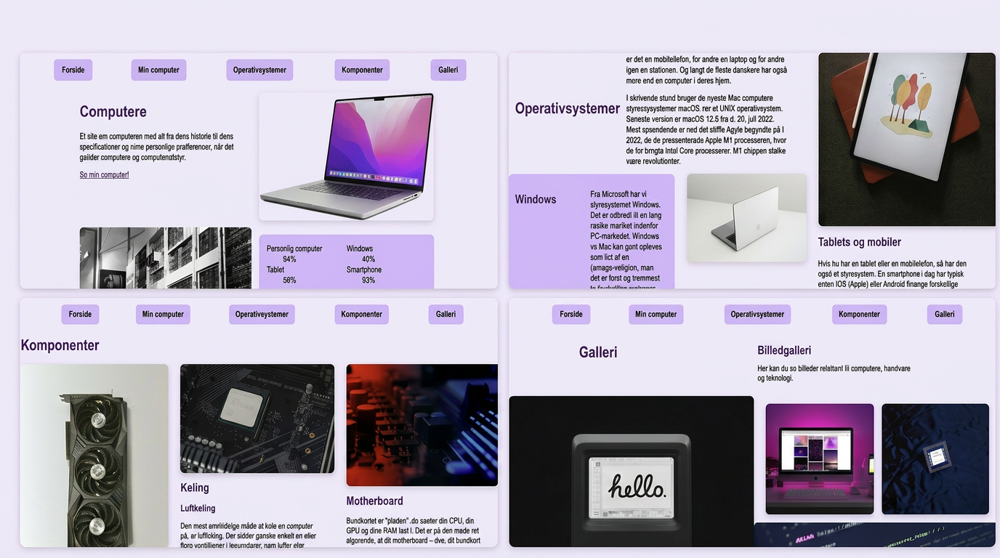

Kodning efter skabelon · Billedopsætning · Struktur
I denne opgave skulle vi kode et website ud fra en fast skabelon. Fokus var på at følge designet præcist, sætte billeder korrekt op og strukturere HTML og CSS efter best practice.
Her er linket til min aflevering:
Se min Tema 02 aflevering
Her er et screenshot af min løsning:

Jeg arbejdede ud fra den udleverede skabelon og byggede siden op med HTML og CSS. Jeg lærte at strukturere billeder korrekt, bruge flexbox/grid og sikre at layoutet matchede skabelonen.
Jeg blev bedre til at følge en designskabelon præcist og forstå, hvordan man opsætter billeder korrekt i kode. Jeg lærte også at arbejde mere systematisk med CSS og struktur.